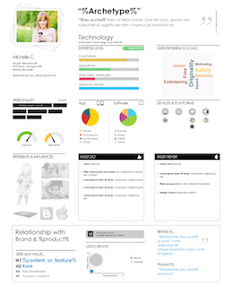
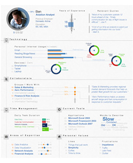

说到用户体验（User Experience, UX），有些人可能听过，但大家或许还是一知半解，又或是听也没听过。
就如上两篇文章所说，在我来看，UX是跟据了Design Thinking的理念，从工种上制定出一套可于企业运作上实践应用的一套框架流程。那，UX的具体工作是怎样的，跟传统设计师的工作又有什么不一样？或许，今天尝试写一个普及帖吧，详细说说UX具体方面的种种。
而在这个需要迅速应变的年代，大家或许可参考下，借镜一下一些比较前进创新的行业做法，将UX应用实践在您的企业部门内，开发真正以用户为本的商品和服务吧~
从根本出发
一直以来，企业的运作都更多于从自身的角度，或从功能角度出发为主导去提供解决的方案。这其实没什么问题，但很容易忽略了一个很重要的原素：那就是市场竞争的本质。
其实，解决问题，永远都不只一个办法。您提供了一个满足市场的答案，不代表用户觉得是最好的方案。在竞争的大环境裹，企业要做的，不只是要找出方案，更在于找出一个比任何人都要好的方案。
企业要做的，不只是要找出方案，更在于找出一个比任何人都要好的方案
那，怎样才算得上好的方案？很简单，用户在比较下最愿意用的方案，就是最好的方案。因此，UX的工作，其实重点不在于页面流程怎样设计之类的实践问题，但当然这是UX须要执行时的职务，而更重要的，是为团队带来设计的思维，通过对用户的理解，让团队重新探索对问题更合适的解决方法。
关于设计思维，可参考我写的两篇文章《程序猿vs设计狮》和《用户＞产品的核心思路和魔法》
由角色开始
去帮助团队去深入探索一个问题，再寻找出一个更好的解决方案。我们可把整个工序看大概可分为以下的若干环节：
{kind=link}
将一个意念转化成可实践的方案，具体来说，就像拍电影又或调查案件一样，我们会先从理解嫌疑犯/角色设定着手，创建出一个个不同的人物设定及档案，我们称之为Persona。
有别于以往我们以一些外在客观条件如收入，职业，年龄等外在条件去划分我们不同的客户群。我们会创造一个个有血有肉的代表人物，付上他的名字，背景、生活状况和态度思想等等，并尽量以图像显示的形式丰富人物的内容。
|  |  |
{kind=link}
{kind=link}
为什么这样做？
- 将分析资料可视化
把数据资料通过视像化和直观的表达形式，有助我们对目标用户产生共呜和同理心（empathy），并能对需求有更深层次的理解。 - 创建一套简单的沟通语言
把模糊抽象的概念具体化，我们通过共同重新定义出Persona这一套简单易明的语言，减少理解上的不一致，帮助团队有效沟通及讨论 - 理解背后动机和想法
理解一个行为决定，其实更多在于分析其背后的动机，往往受到背后成长和生活背景所形成的世界观所影响，而不在于收入、职业、居住城市等表象因素。换句话说，以往的客户群概念没法让我们深入理解用户的潜在想法。 - 量化比较
其实比较好的Persona做法，会尝试设计不同的维度并跟据每个不同用户进行量化，如用户对科技产品的熟悉情度、购买力等等，那团队就更能容易从程度方面比较不同角色。
怎样得出这些结论？
首先，在开始任何调研之前，我认为大前提在于，得先对所要处理的问题更慎重的思考和定义，可参考一点上篇文章我说的观点吧。
然后，在调研方面，主要可通过以下三个方向的综合应用，也视乎可投入的成本和时间：
- 过往数据
跟据以往的用户数据进行分析，也就是现在大数据的背后理念 - 接触用户
与用户进行接触，通过问卷，面对面的轻松访谈，或以日记形式记录典型用户的日常生活状况，从而多维度全面的去尝试了解用户的种种种 - 市场研究
透过goolge及其他途径搜集资料，透过对市场的理解和经验尝试归纳出几个典型的人物模型
场景为先的真实体验
那，各个角色都齐备好了…那，下一步我们该怎么做？
就像是拍电影一样，我们需要一个场景，一个故事，一个用户和你的产品或服务相遇的故事…
在构思整个场景的时候，整个团队就能参与，并可以根据角色的心路历程，亲身去体会整个经历，去查找讨论犯驳或不合情理之处。而所完成的那个场景，我们会称之为用户经历旅程（Customer Journey Map）。以下是一些范例：
{kind=link}
{kind=link}
用户经历旅程其实都有不同的风格，但整体来说在说明整个场景的时候，通常会注意以下三个指标：
- 心情
量化当事人那刻的心情，通常会由开心至愤怒分为5个状态 - 工具/媒介
要是当事人需要通过不同的方法，如电邮、电话等去完成某件事情，我们都会记录下来。 - 所需时间
要完成一件事情需要时间去等待，我们都会把等待状态指示出来
在构思整个过程仔细反覆考量后，我们得出的这个用户的经历旅程，就能比较清晰的关注到他的痛点（Painpoint）。例如：
- 当用户愤怒或不满的时候，我们能够提升他的体验么？
- 过频繁的利用不同工具/媒介，我们可注意到并考虑是否有更直接和简单的办法。越多的需要运用各类工具和媒介，对用户来说体验越是糟糕。
- 等待总是无聊的，除了可反思能不能革新整个流程外，在此时提供额外的帮助，或有效的缩短等待的时间，都是很好的切入点。
关键时刻的来临
其实做了那么多的东西，最重要的，就是想找到那个关键时刻（Moment of Truth, MOT）：那就是你的产品和服务，和用户真正的切入点。
从用户体验的角度而言，我们要做到的，是让我们理解不同的场景故事，和当中用户是怎样能跟我们的产品和服务交接的；又或是去主动找出跟用户的交接的。
而去实现这些交接点的出现，也就我们一直所知的marketing了。
迅速验证
但说到底，这一切，都只是假设而已。所以，具体思路是通过尽快做出样版（Prototype），通过反覆的验证和反思，找出改进产品和服务的下一步方向，并一直循环下去。
{kind=link}
{kind=link}
其实，用这种方法，您或许会问，这可以分散出无数的Persona和相关的多个经历旅程（CJM），而甚至在每个CJM内也有多个关键时刻（MOT），无限伸延…那…我们该怎么样？
又不得不回到很早之前我写的一篇文章了，工作是永远做不完的（要不您我早就失业了吧？:-p），原则在于把事情优先化（Prioritize），把抽象资料可视化（visualize）和可量化（quantify），回看一下，是否发现，UX的工作其实也是围绕着这三个原则建立的？ :p
| ＜上一篇 | 下一篇＞ |